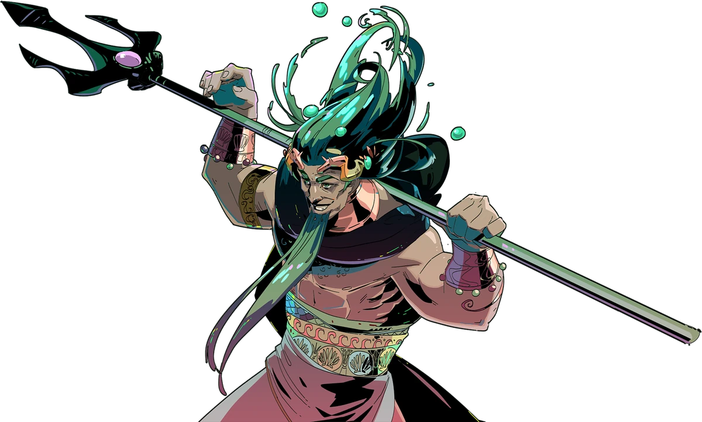
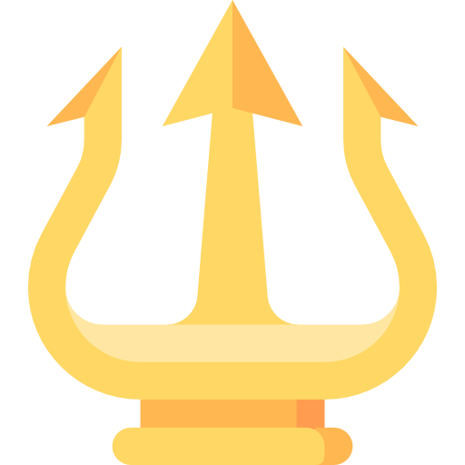
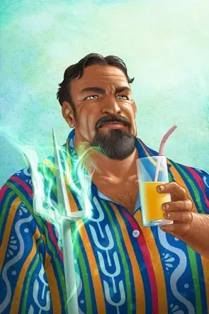
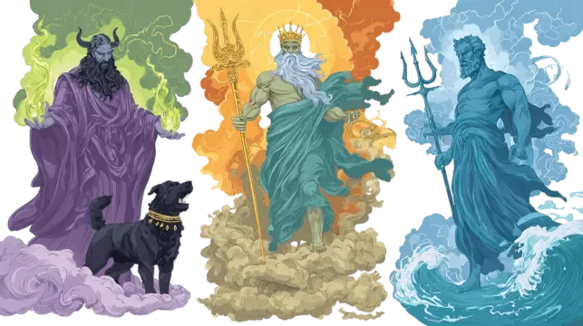

Poseidon possui uma personalidade forte, intensa e imprevisível, assim como o próprio mar. Em certos momentos ele demonstra calma e sabedoria, mas pode se tornar extremamente furioso quando provocado. Seu temperamento é conhecido até mesmo entre os deuses, principalmente quando sente que alguém ameaçou seus filhos ou desrespeitou seu poder. Apesar disso, Poseidon também demonstra compaixão e lealdade. Diferente de muitos olimpianos, ele costuma se importar genuinamente com Percy e acompanha seu crescimento ao longo das aventuras. Mesmo não podendo interferir diretamente o tempo todo, Poseidon tenta proteger seu filho sempre que possível. Outra característica marcante do deus dos mares é seu orgulho. Poseidon raramente aceita ser inferior a alguém, especialmente quando o assunto envolve Zeus. Essa rivalidade entre os irmãos frequentemente gera conflitos dentro do Olimpo.

A relação entre Poseidon, Zeus e Hades é baseada em rivalidade, respeito e disputas constantes pelo poder. Após derrotarem Cronos, os três irmãos dividiram o universo: Zeus ficou com os céus, Poseidon com os mares e Hades com o Submundo. Com Zeus, Poseidon mantém uma rivalidade intensa. Ambos possuem personalidades dominantes e frequentemente discordam sobre decisões envolvendo os deuses e os humanos. Poseidon não gosta da postura autoritária de Zeus e muitas vezes desafia suas ordens, principalmente quando sente que sua família está sendo ameaçada. Já com Hades, a relação é mais distante e fria. Embora exista respeito entre eles, os dois raramente concordam em algo. Poseidon entende o ressentimento de Hades em relação ao Olimpo, mas ainda assim mantém certa desconfiança sobre o deus do Submundo. Mesmo com todas as diferenças, Zeus, Poseidon e Hades representam os pilares do mundo mitológico. Quando trabalham juntos, mantêm o equilíbrio do universo; porém, quando entram em conflito, os céus, os mares e o Submundo podem mergulhar o mundo inteiro no caos.
